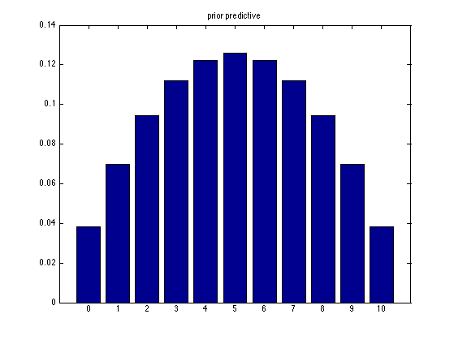
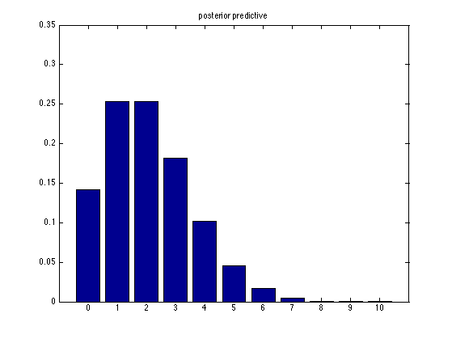
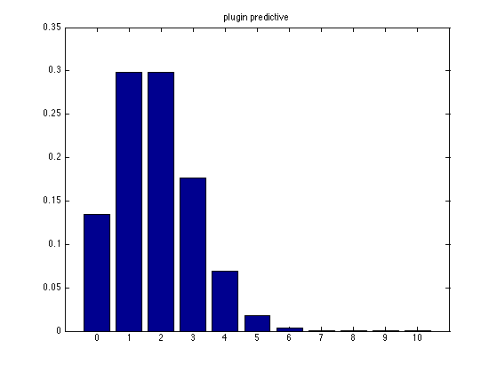

Posterior Predictive Distribution for Beta-Binomial model
Contents
N = 10;
X = [1 2]';
N1 = sum(X);
N0 = N*length(X)-N1;
xs = 0:N;
Prior Predictive
prior.N = N;
prior.a = 2;
prior.b = 2;
priorPred = exp(betaBinomLogprob(prior, xs));
figure;
bar(priorPred);
set(gca,'xticklabel', xs);
title('prior predictive')
printPmtkFigure('BBpriorpred');

Posterior Predictive
post.a = prior.a + N1;
post.b = prior.b + N0;
post.N = N;
postPred = exp(betaBinomLogprob(post, xs));
figure;
bar(postPred);
set(gca,'xticklabel', xs);
title('posterior predictive')
printPmtkFigure('BBpostpred');

MAP estimate (Plugin)
plugin.mu = (prior.a+N1-1)/(prior.a+N1+prior.b+N0-2);
plugin.N = N;
pluginPred = exp(binomialLogprob(plugin, xs));
figure;
bar(pluginPred);
set(gca,'xticklabel', xs);
title('plugin predictive')
printPmtkFigure('BBpluginpred');
